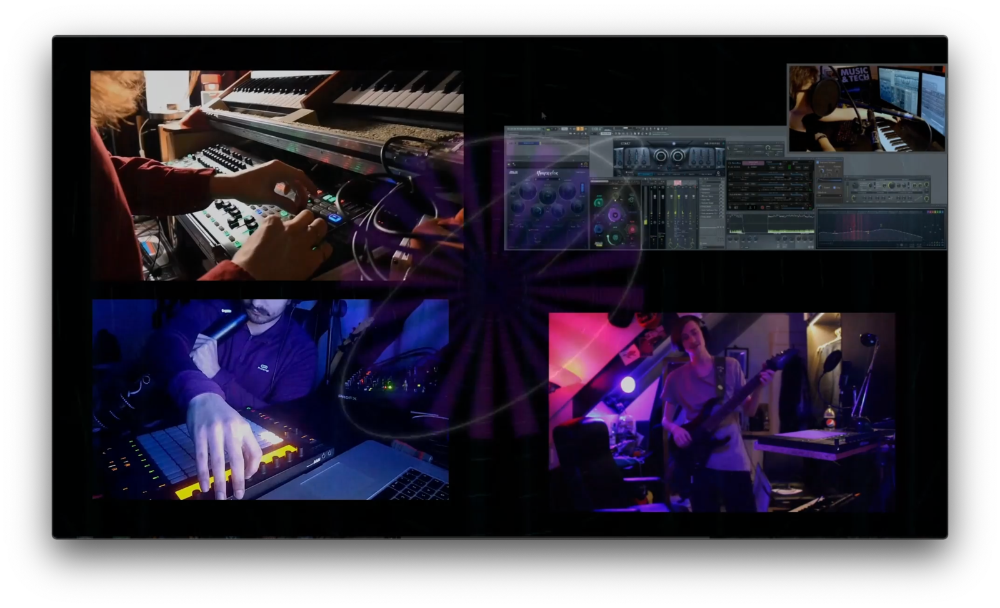
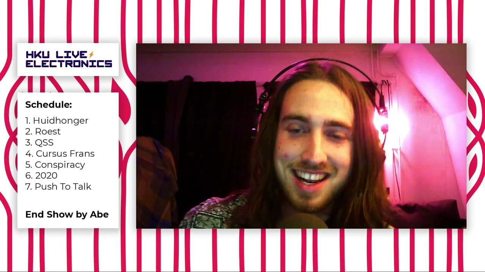

Ether noise
PROJECT DESCRIPTION
All schools and universities in the world had to deal with the Covid-19 crisis from March 2020 onwards. The University of the Arts Utrecht was no exception. Instead of cutting down on the curriculum the pandemic was treated as an opportunity and there was a refocus on online performances and installations. The project driven education allows for such modifications in the curriculum. A first project with the then second year students was completely centred around a festival in a hacked discord channel with a combination of interactive installations and performances with self made instruments. A second project featured a purely live streamed concert from their homes through Twitch.
Much of the same educational goals for a live stage performance could be transferred to the live online situation.
Two less known technologies were instrumental in pulling this off. First, sonobus: this tool allows ‘for streaming high-quality, low-latency peer-to-peer audio between devices over the internet or a local network’. In the context of our students one of the main features that made it very useable was the possibility to use it as a vst~ within a DAW the MAX programming environment. Second, obs-ninja: This tool can be used as a chat program but in our case it was used for its ability to stream a camera image over the internet with a link that can be incorporated into OBS, the free open source video recording, live streaming and live editing tool.
Students were divided in seven groups of four and asked to make a live performance with each of them playing from their own private place. They were also asked to make their own instrument either in hard- or software and they needed to have at least one analog or acoustic source in their group. They were free in the choice of their theme but it had to be related to actuality and it should affect them. The result of the concert can be seen here. There was attention for dramaturgy and presentation and a student not following this specific course was asked to be the presenter of the show and did the actual switching of the performances in OBS using material delivered by the groups.
These same students are going to do a project on interactivity, designing installations and instruments, in April and May. Our proposal is to make a similar live concert to be presented at NIME featuring the highlights of this recorded concert and the April/May project.
PROGRAM NOTES
Students of the University of the Arts Utrecht, school of music technology experienced the same depressing situation as all of us when Covid-19 struck in March 2020. The school proposed to use the pandemic as an opportunity for new interactive performance formats and interactive physical online installations.
Positioning the assignment as an exhilarating state-of-the-art novelty functioned as an extra motivation for the students. While many school subjects suffered from motivation loss, the students active within this project reported an increased working ethos compared to what they experience doing a ‘normal’ physical presentation.
Conceptual focus, often an issue with these kinds of projects for beginning bachelor students, came easy. Themes like ‘Skin Hunger’ and ‘Escapism’ had a strong connection with the students’ own predicaments.
The performance at NIME will deal with the end of the epidemic. This time, the student’s assignment is to translate the uncertainty of the current situation. The multifaceted circumstance sublimates in an online live streamed hybrid performance featuring interactive installations and performances on self-made instruments. Visitors of the NIME conference will literally crash the party at what hopefully be the height of the event.
PERFORMANCE REQUIREMENTS
The performance will be a live online stream. This will probably be a simultaneous livestream on twitch and youtube (for safety) or a platform designated by the organisers of the NIME conference. There are no extra technical requirements. We agreed with the organisers that the NIME conference will be a guest at the performance during a time period of about 10 minutes so that the experience of a live performance in the bigger context of being completely performed and produced by 2nd year bachelor students in an exiting online format becomes clear.
The submitted material is from a live performance in January for about 100 viewers online. The submitted recording has been done using OBS which can also be used to stream. The players are connected using sonobus. There is experience with multiple relevant platforms. The new performance will be more versatile.
MEDIA
The movie can be used. A screenshot of the performance is added for the purpose of printing.


Screen shot from the online performance

▶Live performance of the same students that will also perform at NIME. The focus during this performance was on performing together while being distanced based on a concept and on self-made instruments.